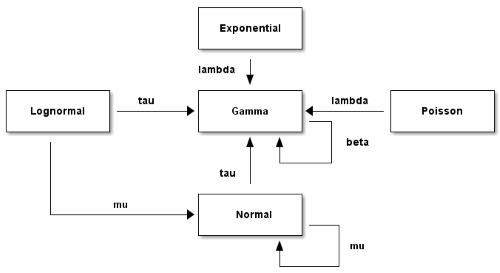
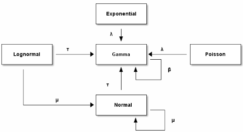

“Technology is additive.” — Kevin Kelly
Old technologies never die. Instead, their range of application shrinks. Or maybe it grows when conditions change.
ASCII art, drawing pictures with fixed-width plain text characters, is no longer how many people want to produce diagrams. Just fire up Adobe Illustrator and you get incomparably more resolution of expression.
And yet there are times when ASCII art comes in handy. You can, for example, paste it into source code files. Someone more familiar with Emacs than Illustrator may be able to produce a simple diagram in the former faster than the latter. And it can be relatively easy to programmatically produce a large number of ASCII art diagrams, depending on the nature of the diagrams.
It’s also possible to use ASCII art as a way to specify nicely rendered images. I’ll show how to do that with ditaa below.
Here’s an ASCII version of the conjugate prior diagram I made some time ago:
+-------------+
| |
| Exponential |
| |
+-------------+
|
lambda |
v
+-------------+ +-------------+ +-------------+
| | tau | | lambda | |
| Lognormal |---------->| Gamma |<----------| Poisson |
| | | |---+ | |
+-------------+ +-------------+ | +-------------+
| ^ ^ | beta
| | | |
| | +------+
| tau |
| |
| +-------------+
| mu | |
+------------------>| Normal |
| |----+
+-------------+ |
^ | mu
| |
+-------+
And here’s the image produced by ditaa processing the ASCII diagram above:

Update: See my next post on how to create ASCII art diagrams and their graphic version from ditaa using Emacs org mode.
Update: When I first made the diagram above, I tried using Greek letters, e.g. using β rather than “beta,” but this didn’t work. I thought “OK, I suppose it’s not really ASCII art if you use non-ASCII characters.” But someone told me Unicode characters worked for him, so I tried again when I wrote the follow up post and it worked.
My first attempt, from a Windows laptop, calling ditaa from the command line, did not work. My second attempt, running inside org-mode from a Windows desktop, did work. My third attempt, running from Emacs on Linux also worked.

Thanks for the reminder. Great to support the work flow.